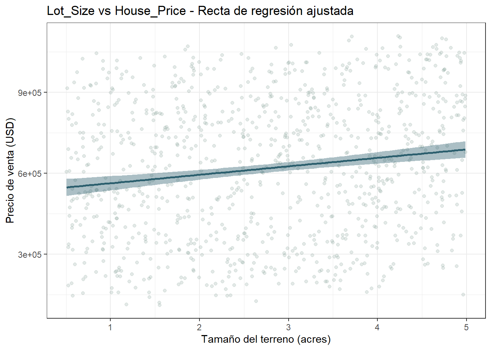

7 Modelo de regresión lineal con Lot_Size como predictor de House_Price
En el apartado de Análisis Exploratorio Bivariado, se encontró que el tamaño del terreno tiene que ver, de una forma modesta, con el precio de venta (\(r_s\) = 0.158). Corresponde ahora, en lugar de solo describir esa asociación con un coeficiente, estimar un modelo de regresión lineal simple que la exprese como una ecuación capaz de predecir el precio de venta a partir del tamaño del terreno.
7.1 Diagrama de dispersión con la recta ajustada
data %>%
ggplot(aes(x = Lot_Size, y = House_Price)) +
geom_point(alpha = 0.25, color = "#8fa8a0") +
geom_smooth(method = "lm", formula = y ~ x, se = TRUE, color = "#2c5f6e", fill = "#2c5f6e") +
labs(title = "Lot_Size vs House_Price - Recta de regresión ajustada",
x = "Tamaño del terreno (acres)", y = "Precio de venta (USD)") +
theme_bw()
La recta ajustada muestra una pendiente positiva muy suave en comparación con la enorme dispersión vertical de los puntos a su alrededor. Para un mismo tamaño de terreno, el precio de venta observado varía en varios cientos de miles de dólares.
7.2 Estimación del modelo
El modelo de regresión lineal simple propuesto es:
\[\text{House Price} = \beta_0 + \beta_1 \cdot \text{Lot Size} + \varepsilon\]
donde \(\beta_0\) es el precio esperado cuando Lot_Size es cero, \(\beta_1\) es el cambio esperado en el precio por cada acre adicional de terreno, y \(\varepsilon\) es el error aleatorio del modelo.
Para que las pruebas de hipótesis y los intervalos de confianza de este modelo sean válidos, se asume que la relación entre Lot_Size y House_Price es lineal y que los errores \(\varepsilon\) cumplen cuatro condiciones: tienen media cero, tienen varianza constante \(\sigma^2\) (homocedasticidad), son independientes entre sí y siguen una distribución normal. Es decir, \(\varepsilon \sim N(0, \sigma^2)\). Estos supuestos no se dan por ciertos, sino que más adelante se verifican a partir de los residuos del modelo.
Se ajusta el modelo por mínimos cuadrados con lm():
Se ajusta el modelo por mínimos cuadrados con lm():
La siguiente tabla recoge los coeficientes estimados, con su error estándar, el estadístico t y el p-valor de la prueba sobre cada uno:
coeficientes <- summary(modelo_lineal)$coefficients
data.frame(
Termino = c("Intercepto", "Lot_Size"),
Estimacion = round(coeficientes[, 1], 2),
Error_estandar = round(coeficientes[, 2], 2),
Estadistico_t = round(coeficientes[, 3], 2),
P_valor = format(coeficientes[, 4], scientific = TRUE, digits = 3)
) %>%
kableExtra::kbl(row.names = FALSE,
col.names = c("Término", "Estimación", "Error estándar", "Estadístico t", "P-valor")) %>%
kableExtra::kable_styling(bootstrap_options = c("striped", "hover", "condensed", "bordered"),
full_width = FALSE)| Término | Estimación | Error estándar | Estadístico t | P-valor |
|---|---|---|---|---|
| Intercepto | 531797.91 | 18715.65 | 28.41 | 1.30e-130 |
| Lot_Size | 31339.23 | 6104.16 | 5.13 | 3.41e-07 |
Y esta otra, los intervalos de confianza al 95% para esos mismos coeficientes:
confint(modelo_lineal) %>%
round(2) %>%
kableExtra::kbl(col.names = c("Límite inferior (2.5%)", "Límite superior (97.5%)")) %>%
kableExtra::kable_styling(bootstrap_options = c("striped", "hover", "condensed", "bordered"),
full_width = FALSE)| Límite inferior (2.5%) | Límite superior (97.5%) | |
|---|---|---|
| (Intercept) | 495071.37 | 568524.4 |
| Lot_Size | 19360.76 | 43317.7 |
Los coeficientes estimados son \(\hat\beta_0\) = USD 531.798 y \(\hat\beta_1\) = USD 31.339, de modo que el modelo ajustado queda:
\[\widehat{\text{House Price}} = 531.798 + 31.339 \cdot \text{Lot Size}\]
Es decir, por cada acre adicional de terreno, el precio de venta predicho aumenta, en promedio, USD 31.339.
La prueba de hipótesis sobre la pendiente (H₀: \(\beta_1 = 0\) vs. H₁: \(\beta_1 \neq 0\)) la encuentra estadísticamente significativa (t = 5.13; gl = 998; p = 3.41e-07), y el intervalo de confianza al 95% para \(\beta_1\) (USD 19.361 ; USD 43.318) no incluye el cero, confirmando que el efecto del tamaño del terreno sobre el precio, aunque modesto, es real y no producto del azar de esta muestra.
Además de los coeficientes, el modelo estima la varianza de los errores \(\sigma^2\), que mide qué tan dispersos quedan los precios reales alrededor de la recta ajustada. Su raíz cuadrada, \(\hat\sigma\), es el error estándar residual y se expresa en las mismas unidades del precio (USD):
sigma_hat <- summary(modelo_lineal)$sigma
data.frame(
Estimador = c("Error estándar residual (σ̂)", "Varianza residual (σ̂²)"),
Valor = c(format(round(sigma_hat, 0), big.mark = ".", scientific = FALSE),
format(sigma_hat^2, scientific = TRUE, digits = 4))
) %>%
kableExtra::kbl(row.names = FALSE) %>%
kableExtra::kable_styling(bootstrap_options = c("striped", "hover", "condensed", "bordered"),
full_width = FALSE)| Estimador | Valor |
|---|---|
| Error estándar residual (σ̂) | 250.410 |
| Varianza residual (σ̂²) | 6.271e+10 |
El error estándar residual es de aproximadamente USD 250.400. En promedio, el precio real de una vivienda se aleja unos USD 250.400 de lo que predice la recta. Es un error muy grande frente a la pendiente estimada (USD 31.339 por acre), lo que confirma que el tamaño del terreno por sí solo deja casi toda la variabilidad del precio sin explicar. Este valor coincide con el cuadrado medio de los residuos de la tabla ANOVA que se presenta a continuación.
7.3 Inferencia sobre los parámetros del modelo
Las estimaciones anteriores son puntuales y dependen de esta muestra en particular, por lo que conviene acompañarlas de intervalos de confianza y pruebas de hipótesis que muestren qué tan confiables son. Se trabaja con la pendiente \(\beta_1\), el intercepto \(\beta_0\) y la varianza de los errores \(\sigma^2\), con un nivel de significancia \(\alpha\) = 0.05 y n - 2 = 998 grados de libertad. Se empieza por los intervalos de confianza al 95% de los dos coeficientes.
confint(modelo_lineal) %>%
round(2) %>%
kableExtra::kbl(col.names = c("Límite inferior (2.5%)", "Límite superior (97.5%)")) %>%
kableExtra::kable_styling(bootstrap_options = c("striped", "hover", "condensed", "bordered"),
full_width = FALSE)| Límite inferior (2.5%) | Límite superior (97.5%) | |
|---|---|---|
| (Intercept) | 495071.37 | 568524.4 |
| Lot_Size | 19360.76 | 43317.7 |
7.3.1 Pendiente (\(\beta_1\))
La prueba sobre la pendiente contrasta la hipótesis nula de que \(\beta_1\) es igual a cero frente a la alternativa de que es distinta de cero, y resulta estadísticamente significativa (t = 5.13; gl = 998; p = 3.41e-07). Como p es menor a 0.05, se rechaza H₀. El intervalo de confianza al 95% para \(\beta_1\), que va de USD 19.361 a USD 43.318, no incluye el cero, lo que confirma que el efecto del tamaño del terreno sobre el precio, aunque modesto, es real y no producto del azar de esta muestra.
7.3.2 Intercepto (\(\beta_0\))
Para el intercepto se contrasta de la misma forma la hipótesis nula de que \(\beta_0\) es igual a cero, y el resultado también es significativo (t = 28.41; gl = 998; p < 2e-16), con un intervalo de confianza al 95% que va de USD 495.071 a USD 568.524. Aun así, este valor tiene poco sentido práctico, porque representa el precio esperado de una vivienda con 0 acres de terreno, un punto que queda fuera del rango observado (de 0.5 a 5 acres). El intercepto sirve para ubicar la recta más que para interpretarse por sí solo.
7.3.3 Varianza de los errores (\(\sigma^2\))
La varianza de los errores mide qué tan dispersos quedan los precios reales alrededor de la recta, y su intervalo de confianza se construye con la distribución \(\chi^2\) de n - 2 grados de libertad, de acuerdo con la siguiente expresión.
\[\frac{(n-2)\,\hat\sigma^2}{\chi^2_{1-\alpha/2;\,n-2}} \;\le\; \sigma^2 \;\le\; \frac{(n-2)\,\hat\sigma^2}{\chi^2_{\alpha/2;\,n-2}}\]
gl <- nrow(data) - 2
sigma_hat <- summary(modelo_lineal)$sigma
sigma2_hat <- sigma_hat^2
lim_inf <- gl * sigma2_hat / qchisq(0.975, gl)
lim_sup <- gl * sigma2_hat / qchisq(0.025, gl)
data.frame(
Parametro = c("Varianza (σ²)", "Desviación estándar (σ)"),
Estimacion = c(format(sigma2_hat, scientific = TRUE, digits = 4),
format(round(sigma_hat), big.mark = ",")),
IC_inf = c(format(lim_inf, scientific = TRUE, digits = 4),
format(round(sqrt(lim_inf)), big.mark = ",")),
IC_sup = c(format(lim_sup, scientific = TRUE, digits = 4),
format(round(sqrt(lim_sup)), big.mark = ","))
) %>%
kableExtra::kbl(row.names = FALSE,
col.names = c("Parámetro", "Estimación", "IC 95% inferior", "IC 95% superior")) %>%
kableExtra::kable_styling(bootstrap_options = c("striped", "hover", "condensed", "bordered"),
full_width = FALSE)| Parámetro | Estimación | IC 95% inferior | IC 95% superior |
|---|---|---|---|
| Varianza (σ²) | 6.271e+10 | 5.755e+10 | 6.859e+10 |
| Desviación estándar (σ) | 250,410 | 239,891 | 261,901 |
La desviación estándar de los errores se estima en USD 250.410, con un intervalo de confianza del 95% que va de USD 239.891 a USD 261.901. Dicho de otra forma, el precio real de una vivienda se aleja en promedio unos USD 250.000 de lo que predice la recta, un error muy grande frente a la pendiente estimada (USD 31.339 por acre) que anticipa la baja capacidad explicativa del modelo. Este valor coincide con el cuadrado medio de los residuos de la tabla ANOVA que sigue.
7.4 Tabla ANOVA del modelo
La tabla ANOVA contrasta la hipótesis global H₀: \(\beta_1 = 0\) vs. H₁: \(\beta_1 \neq 0\), o sea, si el modelo con Lot_Size explica algo de la variabilidad del precio. Con F = 26.36 (p = 3.41e-07) se rechaza H₀, y el modelo en su conjunto es estadísticamente significativo.
En regresión lineal simple, F es el cuadrado del estadístico t de la pendiente (5.13² ≈ 26.36), por eso los dos p-valores coinciden.
tabla_anova <- anova(modelo_lineal)
data.frame(
Fuente = c("Lot_Size", "Residuos"),
gl = tabla_anova$Df,
Suma_cuadrados = format(tabla_anova$`Sum Sq`, scientific = TRUE, digits = 4),
Cuadrado_medio = format(tabla_anova$`Mean Sq`, scientific = TRUE, digits = 4),
F_valor = c(round(tabla_anova$`F value`[1], 2), ""),
P_valor = c(format(tabla_anova$`Pr(>F)`[1], scientific = TRUE, digits = 3), "")
) %>%
kableExtra::kbl(row.names = FALSE,
col.names = c("Fuente de variación", "gl", "Suma de cuadrados", "Cuadrado medio", "F", "P-valor")) %>%
kableExtra::kable_styling(bootstrap_options = c("striped", "hover", "condensed", "bordered"),
full_width = FALSE) %>%
kableExtra::scroll_box(width = "100%")| Fuente de variación | gl | Suma de cuadrados | Cuadrado medio | F | P-valor |
|---|---|---|---|---|---|
| Lot_Size | 1 | 1.653e+12 | 1.653e+12 | 26.36 | 3.41e-07 |
| Residuos | 998 | 6.258e+13 | 6.271e+10 |
La tabla ANOVA llega a la misma conclusión desde otro ángulo (F = 26.36; p = 3.41e-07): se rechaza H₀, y el modelo en su conjunto es estadísticamente significativo.
7.5 Capacidad explicativa del modelo
El coeficiente de determinación (R²) indica qué proporción de la variabilidad del precio de venta queda explicada por el modelo, en una escala de 0 a 1: un R² de 0.03, por ejemplo, significa que el modelo explica apenas el 3% de esa variabilidad, dejando el 97% restante sin explicar.
data.frame(R2 = round(summary(modelo_lineal)$r.squared, 4)) %>%
kableExtra::kbl(row.names = FALSE, col.names = "Coeficiente de determinación (R²)") %>%
kableExtra::kable_styling(bootstrap_options = c("striped", "hover", "condensed", "bordered"),
full_width = FALSE)| Coeficiente de determinación (R²) |
|---|
| 0.0257 |
Acá el R² es de apenas 0.0257, lo que dice que el tamaño del terreno, por sí solo, explica únicamente el 2.6% de la variabilidad del precio de venta.
En otras palabras, aunque la pendiente es estadísticamente significativa, Lot_Size tiene, en la práctica, una capacidad predictiva muy limitada sobre House_Price cuando se usa como único predictor; el 97.4% restante de la variabilidad depende de otros factores no incluidos en este modelo simple, como la superficie construida (Square_Footage), que en el apartado de Análisis Exploratorio Bivariado mostró una asociación mucho más fuerte con el precio.